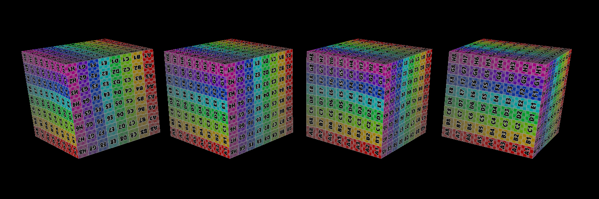
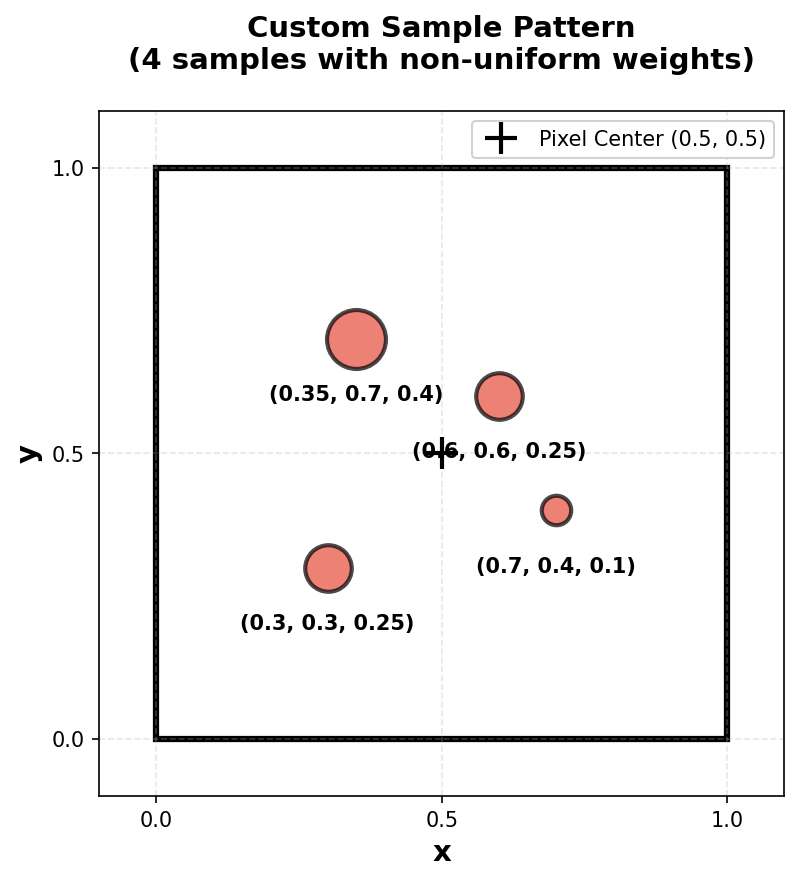
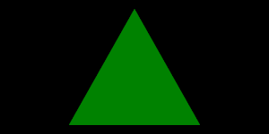
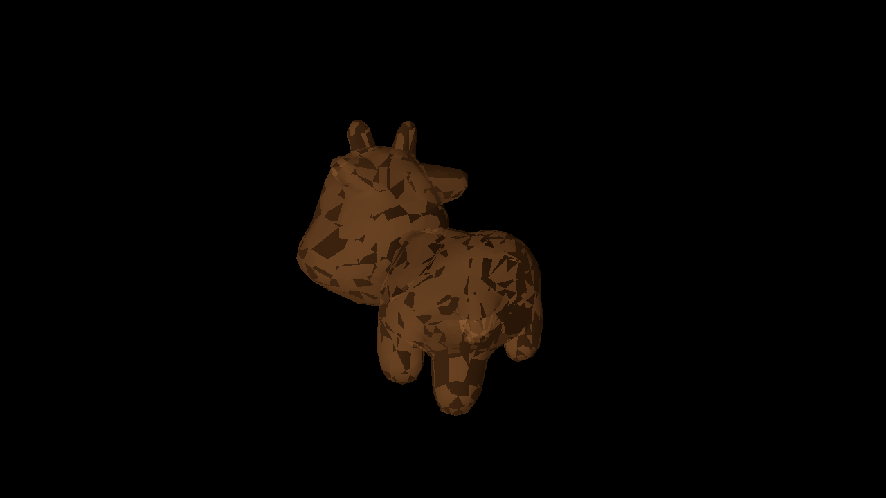

Spent a day on this task, was struggling initially with the diamond exit rule.
(##) A1T3 CHECKPOINT
Reference image:
It was easier to implement, all the important clues were given in the instructions above the function. took ~1.5 hours for implementing this. and 1.5 more for clipping.
(##) A1T4 CHECKPOINT
* What combination of blend and depth styles would enable us to see three colors?
* Red: Blend: Replace, Depth: Less
* Green: Blend: Replace, Depth: Less
* Blue: Blend: Replace, Depth: Less
* What combination of blend and depth styles would enable us to see five colors?
* Red: Blend: Add, Depth: Always
* Green: Blend: Add, Depth: Always
* Blue: Blend: Add, Depth: Always
Three colors: Replace + Depth Less means only the closest object at each pixel is visible and completely overwrites the color.
Five colors: Add + Depth Always means all objects render regardless of depth and their colors add together. You see the three primary colors plus blended colors where cubes overlap
(##) GenAI Use CHECKPOINT
Which model(s) did you use (e.g., ChatGPT-4, Claude-2, etc.)?
Claude 4.5 Sonnet-Extended Thinking
For what purpose(s) did you use GenAI (e.g., brainstorming, code generation, debugging, etc.)?
I used it for task 2, i needed a new theoretical understanding of the diamond exit rule to implement it.
What was it good at? What was it bad at?
It was great at it. my prompt was, "Explain the diamond exit rule with examples, especially how its used to remove skipping+duplicate counting."
(##) A1T5 FINAL

(##) A1T6 FINAL
(##) A1T7 FINAL

Pattern Description: Stratified sampling with 4 non-uniformly weighted samples: bottom-left (0.3, 0.3, weight=0.25),
top-left (0.35, 0.7, weight=0.40), top-right (0.6, 0.6, weight=0.25), bottom-right (0.7, 0.4, weight=0.10).
Performs well when: a. Diagonal edges (samples spread across pixel regions). b.Natural scenes (irregular sampling reduces grid aliasing patterns). c. Moderate detail with lower cost than dense grids
Performs Bad when: a.Very fine detail (only 4 samples may miss thin features). b. Axis-aligned edges (irregular spacing doesn't align well). c. May introduce slight upper-left bias due to asymmetric weighting. c. May introduce slight upper-left bias due to asymmetric weighting
Comparison Results:
No Supersampling (Center):
Custom Pattern:

The custom pattern reduces jagged edges compared to single-sample rendering while maintaining reasonable performance.
(##) RASTERIZED IMAGE FINAL
Your image:

I used the cow model and added the default wooden texture to it. I tried adding a tiger mesh to it but it didnt render well, and also i tried combining other things and obj's but it crashed the UI so I stuck to this simple render.
(##) GenAI Use FINAL
Which model(s) did you use (e.g., ChatGPT-4, Claude-2, etc.)? None
For what purpose(s) did you use GenAI (e.g., brainstorming, code generation, debugging, etc.)?
What was it good at? What was it bad at?
(##) EXTRA CREDIT FINAL
Use this section to explain any extra credit implementations you have made.
(##) Feedback
Use this section to provide feedback about the assignment.